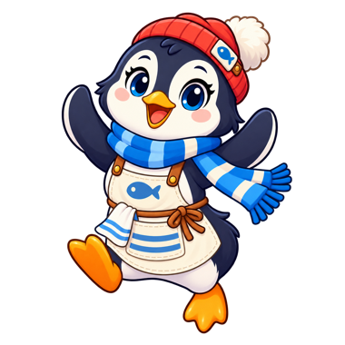

Free · No download · Play in browser
New category · Character game
Penguin Fish MarketPlay Penguin Fish Market online for free — catch fish at the pond, stock the counter, and sell to a queue of Arctic animal customers in a cheerful, icy little market of your own.
▶ Play nowMore games you might like


How to play Penguin Fish Market
Penguin Fish Market is a catch-and-sell shop game with no buttons — you just walk where you need to go. Fish jump out of the icy fishing hole every few seconds and wait on the ice. Walk Penny near one and it flies to her, joining a visible stack she carries. Then walk to the market counter and the fish unload automatically and appear on display. Customers — a seal, an Arctic fox, a puffin, and a walrus — line up at the counter and buy a fish the moment you have stock. The puffin and fox are quick but impatient, while the walrus is slow and will wait longest. Coins spill out near the register, and it's up to you to walk over and collect them.
Keep an eye out, though. Seagulls circle the fishing hole and will snatch a fish from Penny if they catch her, and any fish left on the ice too long swims away. Every so often a Fish Rush hits: for about 20 seconds customers arrive faster and every sale pays double. Spend your coins on faster movement, a bigger basket, a faster-producing hole, or the Dig Tool, which opens a second fishing hole. There's no day timer and no game over — the market just keeps running, and your coins and upgrades are saved for next time.
Controls
| Action | Desktop | Mobile |
|---|---|---|
| Move Penny | WASD or Arrow keys | On-screen directional pad |
| Catch fish | Automatic — just walk near a fish | Automatic — just walk near a fish |
| Stock the counter | Automatic — just walk up while carrying fish | Automatic — just walk up while carrying fish |
| Collect coins | Automatic — walk over a coin pile | Automatic — walk over a coin pile |
| Buy an upgrade or the Dig Tool | Click a panel along the bottom | Tap a panel along the bottom |
Tips & strategies
- Don't let fish sit. Fish that wait on the ice too long swim away, so keep looping between the hole and the counter.
- Dodge the seagulls. They patrol around the fishing holes and steal a carried fish on contact. Approach from the side they've just moved away from.
- Bank a full basket before you sell. Catch up to your carry capacity in one loop, then make a single trip to the counter.
- Stock up for a Fish Rush. When the banner appears, customers arrive faster and pay double — a full counter turns it into a big payday.
- Buy Basket early. Carrying more fish per trip cuts down on walking and pays for itself quickly.
- Save for the Dig Tool. A second fishing hole means more fish waiting whenever you're at the counter.
- Collect your coins. They wait near the register until you physically walk over them.
Game features at a glance
- Free-roam movement with WASD or arrow keys (on-screen d-pad on mobile)
- Fully automatic catching, stocking, and coin collection — just walk where you need to go
- A directional arrow that always points to what to do next
- Four Arctic customers — seal, fox, puffin, and walrus — each with their own walking speed and patience
- Seagulls that patrol the fishing holes and steal a carried fish on contact
- Fish that swim away if they're left on the ice too long
- Fish Rush events with faster customers and double pay, plus steadily rising customer traffic
- An upgrade shop — faster movement, bigger carry capacity, faster fish production
- A Dig Tool that opens a second fishing hole once you can afford it
- Continuous, open-ended play — no timer, no game over, coins and upgrades saved locally
- An original penguin-and-fish-market character theme, illustrated art style
- Runs entirely in-browser, no plugins or installs
About this game
Penguin Fish Market is an original PlayItNow build, made in-house for instant browser play — no plugins, no downloads, nothing to install. It's part of the same illustrated character-game category as our other shop games, built around an original penguin-and-Arctic-market theme. If you're searching for free games like Monkey Mart — catch, stock, and sell games where you gather resources, serve customers, and spend earnings on upgrades — Penguin Fish Market runs on that same easy-to-learn loop, with its own cast, setting, and art rather than a copy. It's still growing, with more fish types and upgrades planned for later updates.
Penguin Fish Market — FAQ
How do I play Penguin Fish Market?
Move Penny with WASD or the arrow keys. Walk near a fish at the pond to catch it automatically, then walk it over to the counter to stock it — no buttons needed anywhere. Customers buy on their own once you're stocked, and coins appear near the register for you to walk over and collect.
What do the upgrades do?
Speed increases Penny's movement speed, Basket lets her carry more fish per trip, and Fish Rate makes the fishing hole produce fish more often. Each has five levels with rising costs, and your levels and coins are saved permanently.
What do the seagulls do?
Seagulls patrol around the fishing holes. If one touches Penny while she's carrying fish, it steals one and knocks her back a little. She's briefly protected afterward, so you won't lose your whole stack at once.
What is a Fish Rush?
Every minute or two, a Fish Rush starts and lasts about 20 seconds. Customers arrive much faster and each sale pays double, so it helps to have a full counter when it begins.
What does the Dig Tool do?
It's a one-time purchase from the panels along the bottom. Once you buy it, a second fishing hole opens on the map and produces fish just like the first — though seagulls patrol it too.
Do the customers behave differently?
Yes. The puffin and fox walk quickly but lose patience sooner, the seal is in the middle, and the walrus is the slowest but waits the longest at the counter.
What happens if a customer waits too long?
If the counter is empty when a customer reaches the front of the line, they'll wait a few seconds and then leave without buying. There's no penalty beyond the missed sale.
Is there a game over or a timer?
No — Penguin Fish Market is continuous. There's no day limit and no way to lose; you just keep catching, stocking, selling, and upgrading at your own pace.
Is my progress saved?
Yes — your coins and upgrade levels are saved locally in your browser, so everything is right where you left it next time you visit on the same device and browser.
Does it work on mobile?
Yes — an on-screen directional pad appears automatically on touch devices for movement, the same as WASD or the arrow keys on desktop. Catching, stocking, and collecting coins are all automatic on both.
Is Penny Penguin an original character?
Yes — Penny and the Fish Market theme were created in-house for PlayItNow. It's not based on or affiliated with any other game.
Is Penguin Fish Market like Monkey Mart?
It's in the same genre — a catch-and-sell shop management game where you gather resources, stock a counter, serve customers, and spend earnings on upgrades — but with an entirely original penguin-and-Arctic theme rather than a copy. If you enjoy games like Monkey Mart or other shop simulator and management games, the core loop will feel familiar while everything else is our own. See how our two shop games compare.
Looking for something else? Browse all games on PlayItNow.